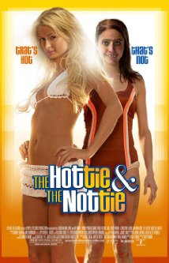

ReviewSkimmer.com
Charts
Presentation
About
The Hottie & the Nottie

"I would not recommend seeing this movie even it it is for comic value of how
bad
it is."
—
Peeni_Sweenis
"Paris Hilton is not the
worst
person ever imaginable."
—
slasherguyy
"A
waste
of time, money and effort."
—
jodylax
"This movie has no plot,
terrible
acting, among other things that make this movie
terrible
."
—
jts0405
"The script is bad,
unfunny
, and along with that shows no development in character whatsoever."
—
Tommy Nelson